15 anos
5/12/2010
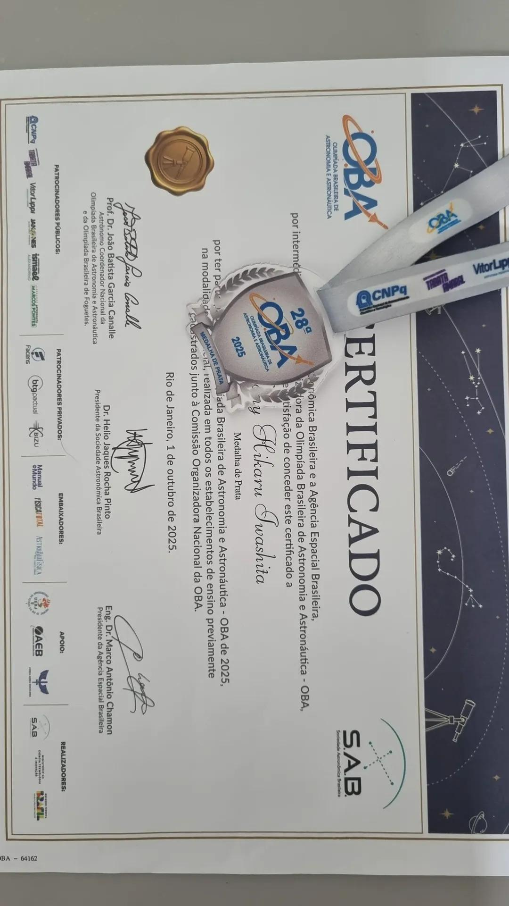
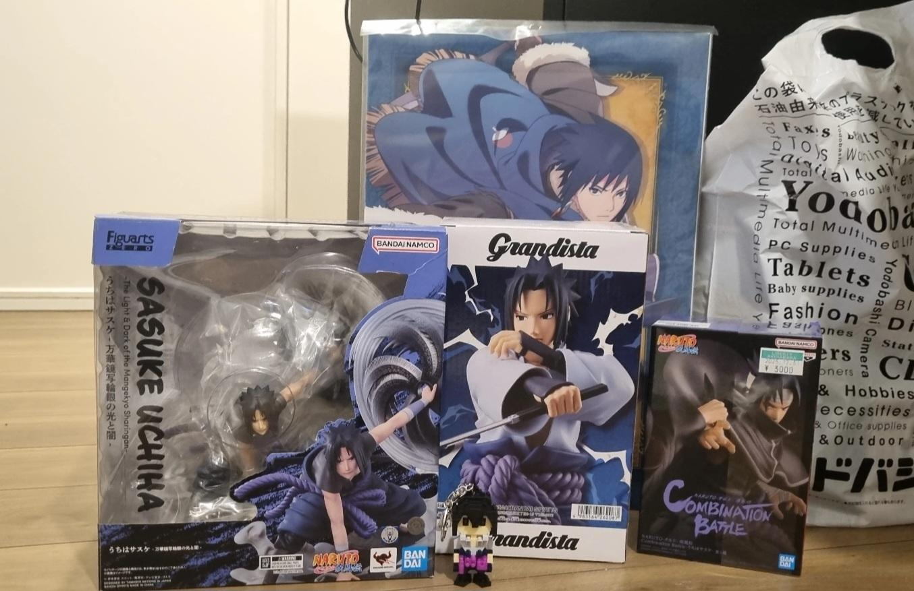
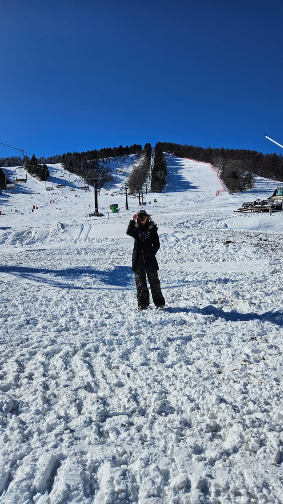
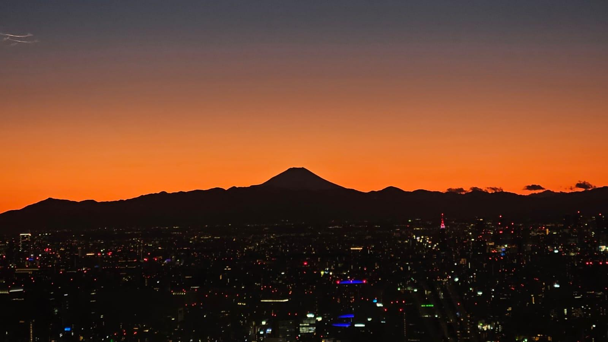
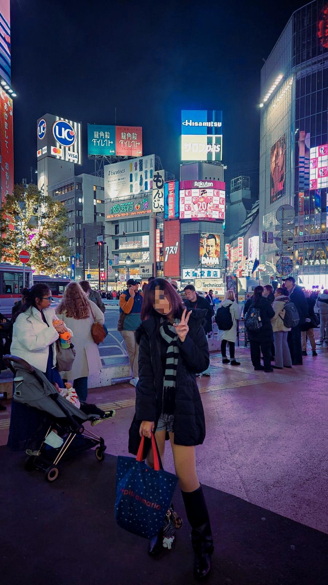
Japão: passei quase 1 mês lá e conheci vários lugares diferentes. Os das fotos, respectivamente, são: Nagano e Tokyo. Essa viagem foi meu presente de 15 e a melhor experiência da minha vida. Eu sempre me identifiquei muito com a cultura e a estética japonesa, então estar lá, principalmente em Tokyo, foi como se eu estivesse finalmente em casa. E, falando em casa, eu visitei meus avós pela segunda vez em Ueda, minha família toda estava lá, então deu para aproveitar bastante esse tempo com meus avós, tios e primos que eu quase nunca tive por causa da distância. Valeu muito a pena e eu só me arrependo de não ter feito tudo o que eu queria ter feito, mas eu com certeza vou voltar em um futuro não muito distante.
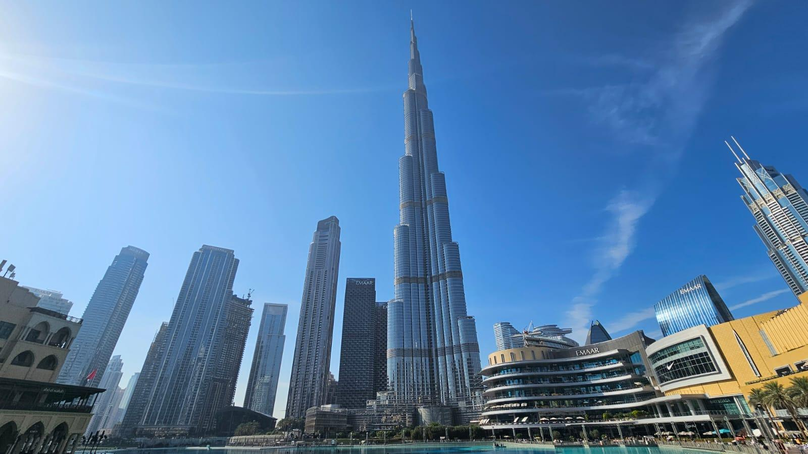
Emirados Árabes Unidos: mesmo com o pouco tempo que eu passei lá, foi uma experiência muito boa que eu teria de novo. Confesso que eu fiquei quase o tempo todo me lamentando porque eu tava com saudade do Japão (peguei conexão em Dubai na volta), mas não me arrependo de ter ido, muito pelo o contrário, o Burj Khalifa é lindo, o deserto é lindo, as pessoas são bastante amigavéis, a praia é muito linda e a cidade é bem futurística, com uma estética que mistura frutiger aero e futurism aero em alguns pontos.
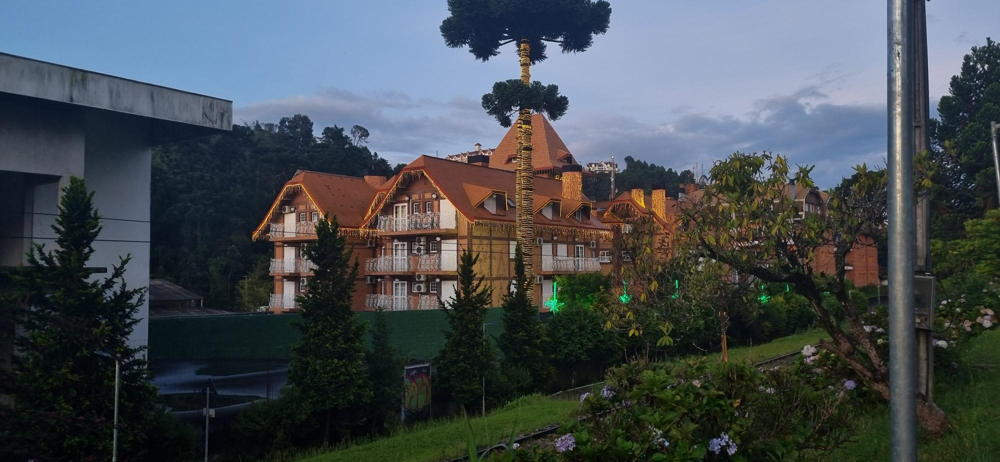
Campos do Jordão: é um lugar bem bonito e frio, e eu adoro frio, então foi muito bom ter ido.
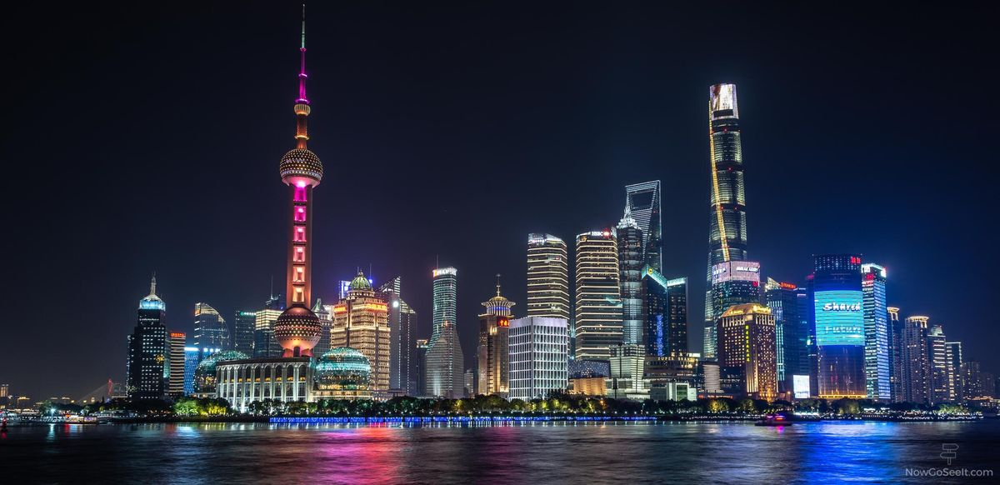
China: minha vontade de conhecer a China é recente, mas eu acho um lugar muito lindo e eu gosto da estética de cyberpunk, e pelo o que eu vejo as cidades grandes de lá são assim.
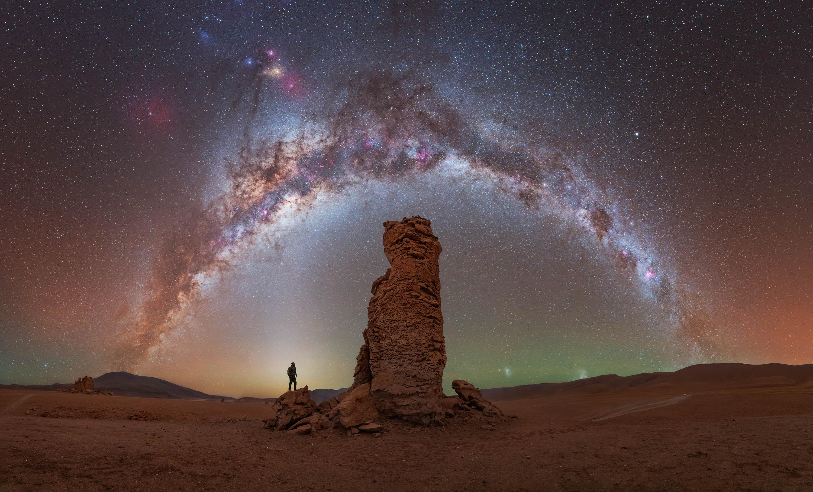
Chile: eu gosto muito de astronomia então meu sonho é ir para o deserto do atacama ver o céu mais estrelado do mundo.
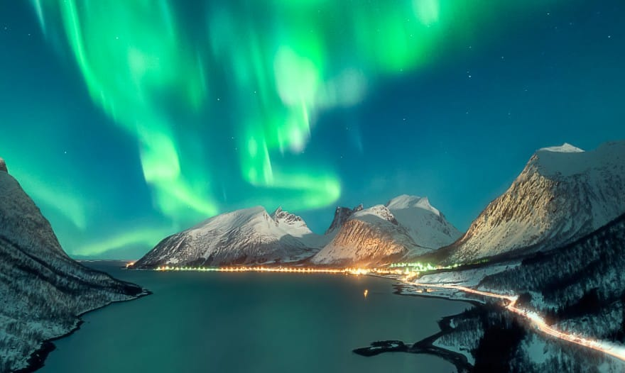
Noruega: pelo mesmo motivo do Chile, eu gosto muito de astronomia e outro sonho é ver auroras boreais, e a Noruega é um ótimo lugar para isso.
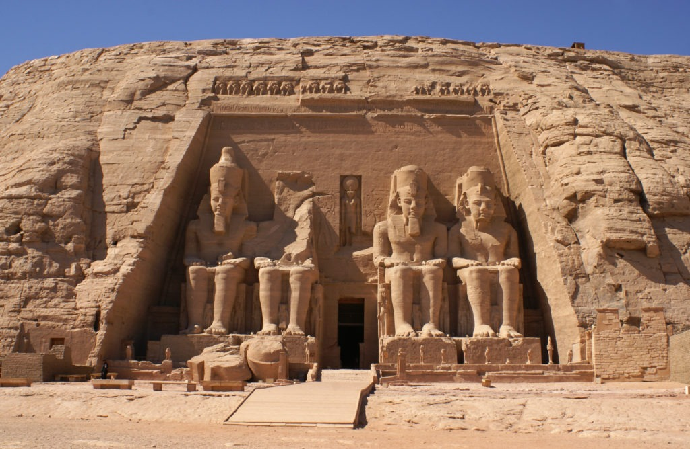
Egito: me interesso muito pelos monumentos do Egito Antigo, gostaria muito de ter a oportunidade de vê-los.